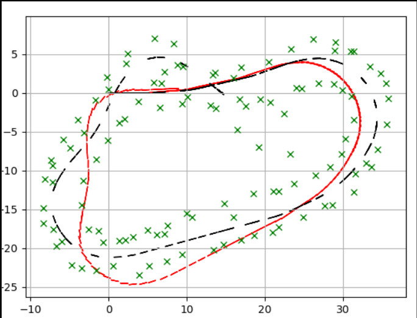
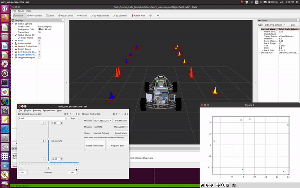

Extended Kalman Filter SLAM

As part of my summer research with Professor John Dolan, I developed, optimized, and validated an Extended Kalman Filter based approach to SLAM. This approach will be deployed on 22e, the next-gen driverless racecar being developed by Carnegie Mellon Racing - Driverless, of which I am now the Project Lead.
Theory of EKF-SLAM
EKF-SLAM operates on the same principles as the Extended Kalman Filter. However, unlike a standard EKF, which often has a constant state matrix that tracks some robot features (position, velocity, rotations, etc.),
the EKF-SLAM algorithm constantly updates its state matrix and covariances to reflect discovery of new landmarks.
Similar to the EKF, every iteration the EKF-SLAM runs two steps:
- Prediction Step - Utilize a motion model and previous state to estimate what current state might be
- Update Step - Merge this estimate with odometry from some sensor suite, weighting based on the Kalman Gain
In addition to these steps, the EKF-SLAM algorithm has to run a data association algorithm to identify what are possible new landmarks. To solve this problem, I implemented a maximum-likelihood-estimator based on Mahalanobis Distance,
which is a heuristic similar to Euclidean Distance but enables matching points to distributions. Since each cone is modelled as a Gaussian distribution due to its associated noise, the Mahalanobis Distance is a great metric for data association.
One of the big optimizations that I made was translating my original implementation in Python to C++, resulting in almost a 10Hz improvement in runtime. This resulted in more optimal pose and landmark estimation, reflecting closer to ground-truth values.
Python
C++
Watch the algorithm build a map on the simulator!
